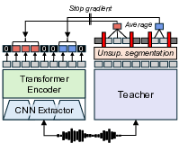

|
Ethan Chen
Hi, I'm a master's student at UC San Diego. I graduated with a B.A. in Computer Science and Statistics from UC Berkeley in May 2025. There, I did research in speech and LLMs in the Berkeley Artificial Intelligence Research Lab, where I was advised by Prof. Gopala Anumanchipalli.
Email / LinkedIn / Google Scholar / GitHub |

|
ResearchI'm interested in robotics, computer vision, speech, deep learning, and generative AI. |
|

|
Sylber: Syllabic Embedding Representation of Speech from Raw Audio
Cheol Jun Cho, Nicholas Lee, Akshat Gupta, Dhruv Agarwal, Ethan Chen, Alan W. Black, Gopala Anumanchipalli, ICLR, 2025 GitHub / arXiv TBD |
Miscellanea |
|
Feel free to steal this website's source code. Do not scrape the HTML from this page itself, as it includes analytics tags that you do not want on your own website — use the github code instead. Also, consider using Leonid Keselman's Jekyll fork of this page. |